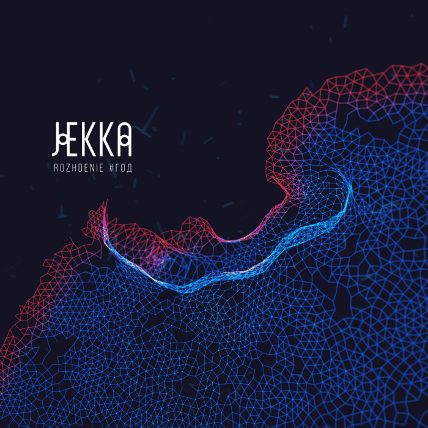
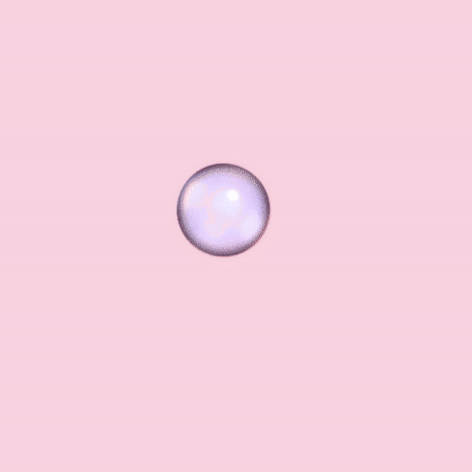
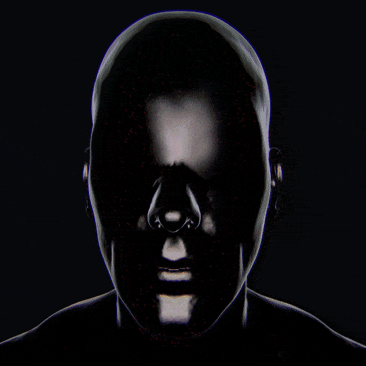
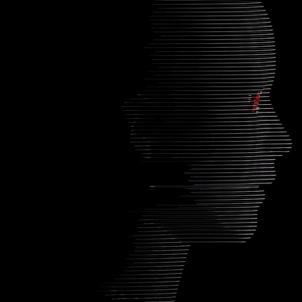

#ГОД
In 2017 Jekka presented #ГОД (YEAR) — an exploratory album investigating Russian folklore and digital realities. During a whole year, a team of directors, writers, performers and artists reimagined Russian folklore. This journey was expressed in a series of multimedia events, performances, videos, folk singing and new rituals. Public spaces and social networks became the epicentre of the project.
#ГОД is interpreting the calendar and life cycle of Slavic people. Mixing the natural and technological, history and today’s context, where the voice is the main driving force. That is why Jekka’s new releases are filled with rich vocals and cold industrial and synthetic sounds. The #ГОД project is an evolution of understanding folk, it is a search for your inner voice through ancient rituals and the cultural and acoustic code of folklore.
#ГОД consists of 4 EPs, each reflecting a significant point in the calendar and life cycle of Slavic people.
ROZHDENIE
ROZHDENIE embodies the transition from “that” world into “this” world, it is a ritual of a new person coming into the world of the living and also symbolises the awakening of nature, the beginning of a new cycle.

The night was still, dark and moonless. The snow was whispering outside the house, the gates creaked, a bird of prophecy flew past and dropped a golden feather straight down the chimney and into the chambers.
The house stood illuminated by extraordinary light and a song echoed across the land. When the people came out of the house, awoken from their dream they saw the faraway stars burning in silver flames and all the houses near glowing as if the sky reflected in the earth.
The bird’s mystical song brought light across the sky and opened all the gates of all the houses, whispering eternal words. A story wide as the sky and an endless field looking at each other forever in a dream.
The night was very quiet, the field was vast and in that field one could find himself a house alight with welcome. And a faraway song of a new beginning and a rebirth.
The young women set out to call upon the Spring. Across the icy mirror of the water wide they went. For three days and three nights they walked with songs and merriment. The ice thundered, the reddish sun moved from shore to shore and out of the woods, across the field.
The cold water shuddered and rumbled as the winter storm turned into a bird's song. The young women called upon the Spring singing, their spellbinding voices bringing blissful life across the frozen water, warm air into the waking forest.
The young women stepped out from the river with the water high. A giant sun above, gleaming. The forest swaying as if woken from a dream, enchanted.
The young women stepped into the forest. And saw a tree. A child slept wrapped in its broad roots.
The young women were singing a lullaby.
YUNOST
YUNOST is the second installment of #ГОД and conveys initiation rituals, circle dances as a reflection of nature and the role of participants in the ritual. YUNOST is the border between Spring and Summer, it is a rave of nature, inner and outer transformation.

Grew branch after branch
To rise high
Ripened the blood
Like a red berry
The wonderous beautiful tree
Grew and stronger it got
And not the birds that the nest made
But the bright stars
Found home in it
And not the small creatures
Around it walked, singing,
But the planets
Oh wonder tree
Ripened the red fruit
Ripened the blue fruit
Ripened the black fruit
And the beautiful gifts
SVADBA
SVADBA (Wedding) is the third instalment of the #ГОД project and expresses the inner transformation of a person, his or her communication with the outside world. The opposition of mine/foreign arises, the life space around the person becomes narrow, he or she becomes wordless and other participants of the ritual speak on his/her behalf. This is a process of loss and gain through different ritual symbols and objects.

The girls were weaving,
To cover the tree with the quilt
So the blackbirds
Wouldn’t rest on it
So the stars wouldn’t fall
And get tangled in the branches
The girls were weaving
Covering the river
Covering the field
So the cold winds
Wouldn’t mix the water and the bread
The young men are coming
Coming for the girls
Not seeing the quilt
Falling under the ice
The girls wept
Day and night they lamented
Of the young men
Underwater
The girls were weaving
Covering themselves with the quilt
And found themselves
On the other side of the river
They saw a reflection of the tree
The young men under it
Sleeping and waiting
The girls started weaving
Crowns from leaves.
Singing and breaking the branches:
“One hand waking, the other covering
One hand leading, the other braiding”
As the girls were singing, the underwater winds were rising
The river was changing
The tree shook and up it went
The quilt into strings
Into rods it turned
They put on the crowns
And their braids fell
The young men slept and slept and suddenly awoke
“Down the aisle I go, to wake you
To share the house and table”
The earth shook and shivered
With all its might the tree
Rose up into the sky
An island just beneath with grass so green and flowers so bright
Rendered the ceremony.
The storm died.
And plants spread all over from the wondrous island
The girls were weaving the quilt
The young men singing to the girls.
PLACH
The end of life is the beginning of a transition to the status of an ancestor, the opposition of “that” world and “this” world, when the soul separates from its former place and inhabits an invisible otherworldly dimension. Lamentations is the main tool of communication with the world of the dead. Nature falls asleep in winter and Yule begins — a time of temporary chaos, statelessness, necessary for renewing the world and transforming the old into the new.

PROJECT TEAM
- Maria Izmalkova — vocalist
- Tatiana Eliseeva — vocalist
- Maria Sivkova — vocalist
- Tatiana Gildebrant — vocalist
- Galina Nikolaeva — vocalist
- Maria Patsyuk — performer, director
- Anastasia Trytyakova — performer, storyteller
- Evgenia Drobina — performer
- Anton Berkasov — visual artist
- Natalia Butova — DOP
- Lesya Rusakovich — fashion designer
- Panika Derevya — experiential designer
LIVE / PERFORMANCES
1 / 6